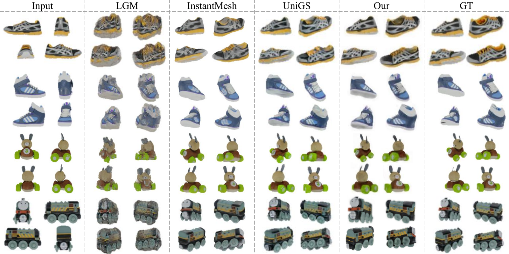
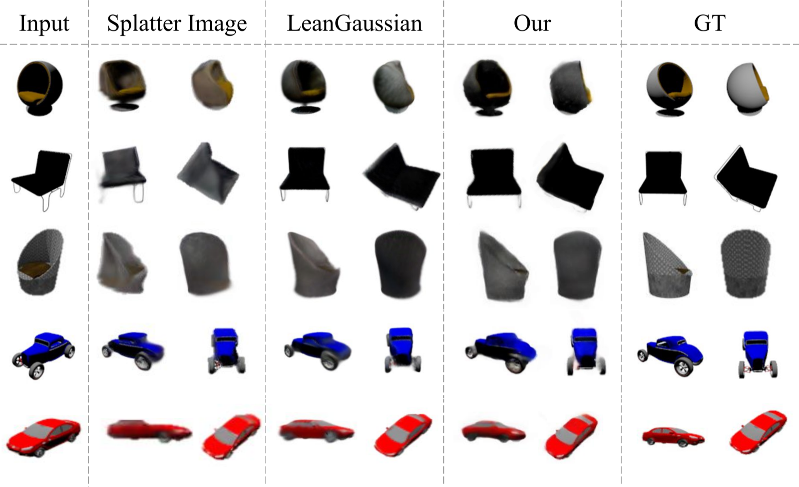

FlexSplat is a feed-forward framework for object-centric novel view synthesis when camera poses are not available. The model couples a geometry transformer with a Gaussian decoder, so pose, depth, and scene representation are learned together rather than treated as separate preprocessing steps.
Instead of constructing Gaussians from pixels or point-cloud correspondences, FlexSplat decodes a flexible set of learned Gaussian queries. Each query gathers multi-view evidence through depth-aware projection and deformable attention, producing a compact representation that can scale with the number of input views.
The pipeline first estimates camera geometry and depth from unordered views, then uses those predictions to condition a shared Gaussian query decoder. This makes the representation independent of dense point correspondence and keeps the Gaussian budget fixed by design choice rather than image resolution.
A VGGT-style branch predicts cameras, depth, and confidence while staying in the training path, letting geometry adapt to the reconstruction objective.
Learned Gaussian queries form a compact scene representation, with 10K, 15K, or 20K primitives depending on the input-view setting.
Queries project into each image plane and sample fused feature maps, allowing the decoder to build view-consistent structure from noisy geometry.

Experiments cover single-view ShapeNet-SRN reconstruction, multi-view Google Scanned Objects evaluation, view-count scaling, ablations, timing, and robustness to camera-pose perturbation.
29.73
PSNR on 4-view GSO
0.041
LPIPS on 4-view GSO
20K
Gaussians for 4 views
0.992s
End-to-end inference




The repository includes Hydra configurations for Objaverse-LVIS training, ShapeNet-SRN and GSO evaluation, ablations, inference timing, pose metrics, and custom-image reconstruction.
conda create -n flexsplat python=3.10 -y
conda activate flexsplat
pip install torch torchvision --index-url https://download.pytorch.org/whl/cu121
pip install -r requirements.txt
python -m src.main +experiment=objaverse
python -m src.main +experiment=gso checkpointing.load=$CKPT
python -m src.demo --images path/to/images --checkpoint $CKPT --export-plySee the GitHub repository for dataset layout, full table commands, and test instructions.
@inproceedings{sabbaghziarani2026flexsplat,
title={FlexSplat: Flexible Feed-Forward 3D Gaussian Splatting without Point Cloud Correspondence},
author={Sabbaghziarani, Amir and Ye, Hanting and Gorlatova, Maria and Ding, Yi},
booktitle={British Machine Vision Conference},
year={2026}
}